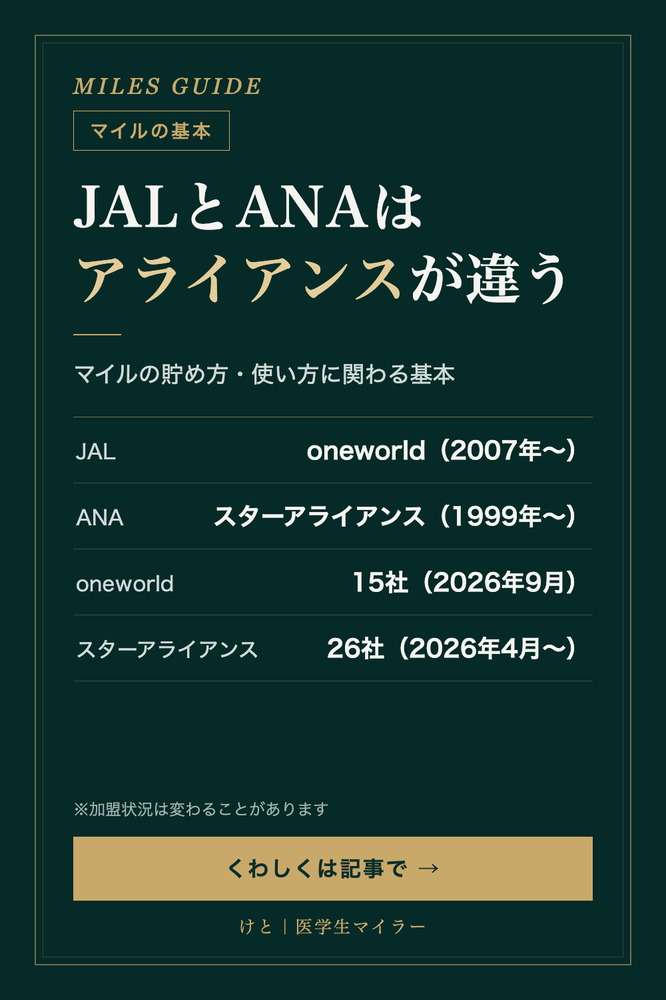

MILES GUIDE
JALとANAはアライアンスが違う｜oneworldとスターアライアンスの基本
2026/10/18 時点の情報
JALとANA、同じ日本の航空会社なのに、実は属している航空アライアンス（航空会社のグループ）が違います。マイルの貯め方・使い方にも関わる、アライアンスの基本をまとめました。

JALはoneworld、ANAはスターアライアンス
世界の主な航空アライアンスには、oneworld（ワンワールド）、スターアライアンス、スカイチームの3つがあります。
- JAL：oneworldに2007年4月1日に加盟
- ANA：スターアライアンスに1999年に加盟
同じアライアンスだと何がいいのか
oneworldの発表では、よく利用する人向けに、アライアンス全体でのマイルやポイントの獲得・利用、空港ラウンジの利用、優先チェックイン・優先搭乗、手荷物許容量の追加などの特典があると説明されています。受けられる特典は、会員のステータスや航空会社によって違います。
たとえばJALのマイルを貯めている人なら、oneworldの航空会社に乗ったときのマイルの扱いを、乗る前に確認しておく価値があります。
oneworld（ワンワールド）
- 設立：1999年2月1日
- 加盟：15社、約1,000の就航地（2026年9月の発表時点）
- 2026年のSkytraxワールド・エアライン・アワードで「世界最高の航空アライアンス」に選ばれ、oneworldにとって5度目の受賞
スターアライアンス
- 設立：1997年。世界で最初のグローバルな航空アライアンス
- 加盟：26社（2026年4月1日にITAエアウェイズが加盟）
まとめ
| oneworld | スターアライアンス | |
|---|---|---|
| 日本の加盟社 | JAL（2007年〜） | ANA（1999年〜） |
| 設立 | 1999年 | 1997年 |
| 加盟社数 | 15社（2026年9月） | 26社（2026年4月〜） |
加盟社の顔ぶれは、今も入れ替わり続けています。次の旅行でどの航空会社に乗るか迷ったら、「JALならoneworld、ANAならスターアライアンス」というところから考えてみるのもおすすめです。
※2026年10月時点の各社・各アライアンスの公式発表と報道をもとにしています。加盟状況は変わることがあるので、最新情報は各アライアンスの公式サイトで確認してください。